Globalization, Global Change, and Emerging Infectious Diseases
John M. Drake
Odum School of Ecology & Center for the Ecology of Infectious Diseases
University of Georgia
University of Georgia School of Law
Athens, Georgia
September 21, 2026
The Matsamo border post at Jeppes Reef, Eswatini. Image: Wikimedia Commons
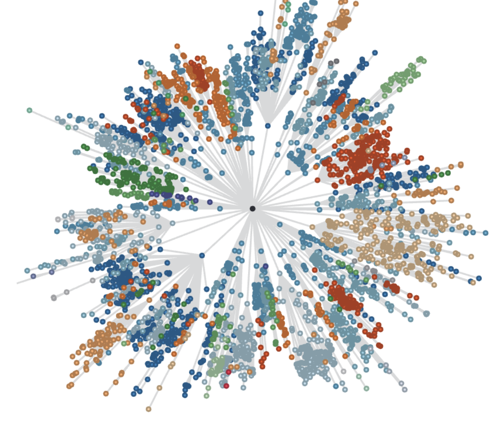
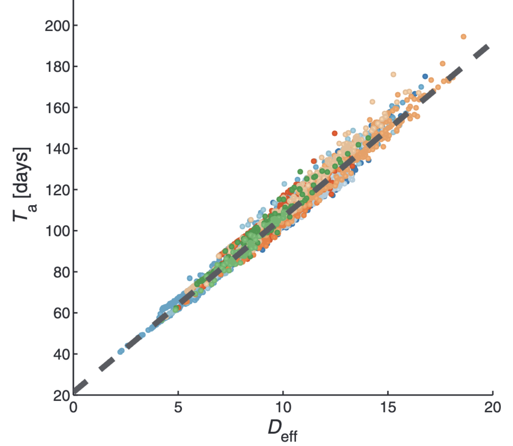
Left: the shortest-path network from Hong Kong to 4,069 world airports. Right: epidemic arrival time is almost perfectly linear in effective distance on that network. Source: Brockmann & Helbing (2013) Science 342: 1337–1342.
Etymological — pan + demos: a disease “of all the people”
Epidemiological — outbreak → epidemic → pandemic: scale, distribution, sustained transmission
Institutional — the PHEIC: “an extraordinary event which constitutes a public health risk to other states through the international spread of disease”
Emergency hospital during the influenza pandemic, Camp Funston, Kansas
Image: Wikimedia Commons
| Event | Origin and route |
|---|---|
| Influenza A H1N1, 1918–20 | Animal-related; spread with WWI troop movements |
| Influenza A H2N2, 1957–58 | China; wild birds → poultry/pigs → humans |
| Cholera (El Tor), 1961– | Indonesia; food and water; ballast-water spread |
| Influenza A H3N2, 1968–70 | Hong Kong; birds → livestock → humans |
| Influenza A H1N1, 1977–78 | Probable laboratory or vaccine release |
| HIV/AIDS, 1981– | Central Africa; primate spillovers → global travel |
| SARS, 2002–03 | Guangdong; wildlife farming and live-animal markets |
| Influenza A H1N1pdm09, 2009–10 | Mexico; reassortment in industrial pig farms |
| Zika, 2007–17 | Africa/Asia; urbanization and Aedes mosquitoes |
| COVID-19, 2019– | Wuhan; wildlife trade or possible lab release |
| Mpox, 2022–23 | West/Central Africa; spillover from wild rodents |
| Event | Origin and route |
|---|---|
| Influenza A H1N1, 1918–20 | Animal-related; spread with WWI troop movements |
| Influenza A H2N2, 1957–58 | China; wild birds → poultry/pigs → humans |
| Cholera (El Tor), 1961– | Indonesia; food and water; ballast-water spread |
| Influenza A H3N2, 1968–70 | Hong Kong; birds → livestock → humans |
| Influenza A H1N1, 1977–78 | Probable laboratory or vaccine release |
| HIV/AIDS, 1981– | Central Africa; primate spillovers → global travel |
| SARS, 2002–03 | Guangdong; wildlife farming and live-animal markets |
| Influenza A H1N1pdm09, 2009–10 | Mexico; reassortment in industrial pig farms |
| Zika, 2007–17 | Africa/Asia; urbanization and Aedes mosquitoes |
| COVID-19, 2019– | Wuhan; wildlife trade or possible lab release |
| Mpox, 2022–23 | West/Central Africa; spillover from wild rodents |
| Event | Origin and route |
|---|---|
| Influenza A H1N1, 1918–20 | Spread with WWI troop and transport routes |
| Influenza A H2N2, 1957–58 | Encircled the globe with early commercial aviation |
| Cholera (El Tor), 1961– | Reached Latin America 1991 via ballast water → IMO Convention (2004) |
| Influenza A H3N2, 1968–70 | Spread in step with the jet age |
| Influenza A H1N1, 1977–78 | Probable laboratory or vaccine release |
| HIV/AIDS, 1981– | Amplified by labor mobility and international travel |
| SARS, 2002–03 | One hotel floor → three continents in days |
| Influenza A H1N1pdm09, 2009–10 | Global pig trade, then global air travel |
| Zika, 2007–17 | Travel + invasive vectors across the Pacific and Americas |
| COVID-19, 2019– | The full global aviation network |
| Mpox, 2022–23 | International travel networks; 2003 via pet trade |
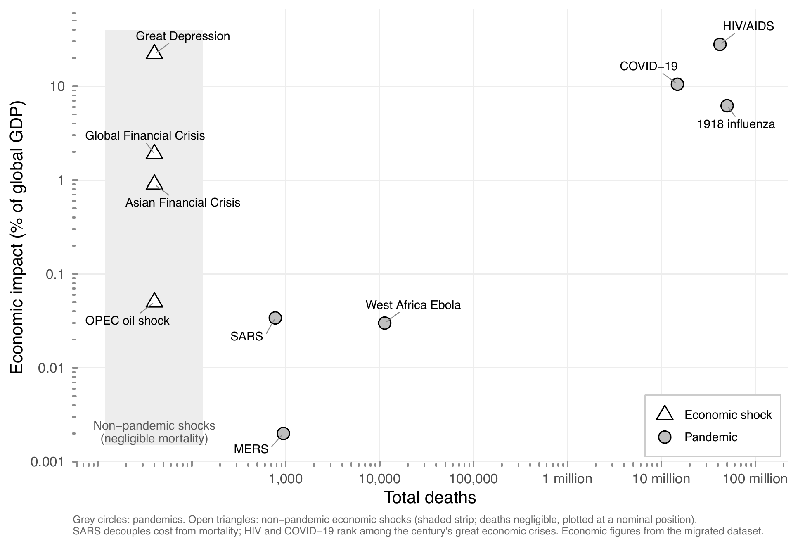
Economic impact as a share of world output against total deaths for the century’s pandemics, with the era’s major non-pandemic economic shocks (open triangles) for comparison.
“Most emerging infections appear to be caused by pathogens already present in the environment, brought out of obscurity or given a selective advantage by changing conditions and afforded an opportunity to infect new host populations… Surprisingly often, disease emergence is caused by human actions, however inadvertently.”
Morse, S.S. (1995) “Factors in the emergence of infectious diseases,” Emerging Infectious Diseases 1: 7–15.
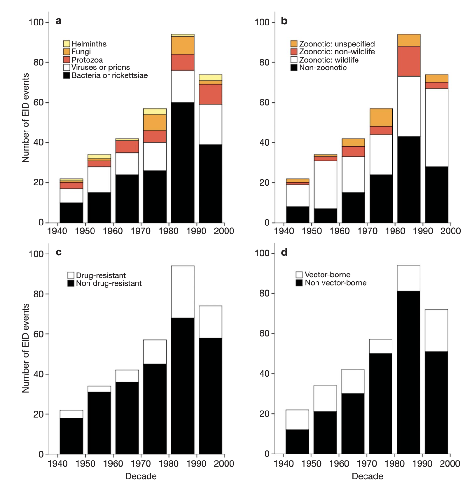
Jones et al. compiled 335 emerging-disease events, 1940–2004: the majority zoonotic, clustered where demographic growth, land-use change, and economic integration accumulate.
Jones, K.E. et al. (2008) “Global trends in emerging infectious diseases,” Nature 451: 990–993.
1992 IOM report: 6 factors — microbial adaptation; demographics and behavior; economic development and land use; travel and commerce; technology and industry; breakdown of public health
2003 IOM report: 13 factors — adding climate, ecosystems, poverty and inequality, war and famine, political will, intent to harm…
Stephens et al. 2021: 48 factors in 9 categories
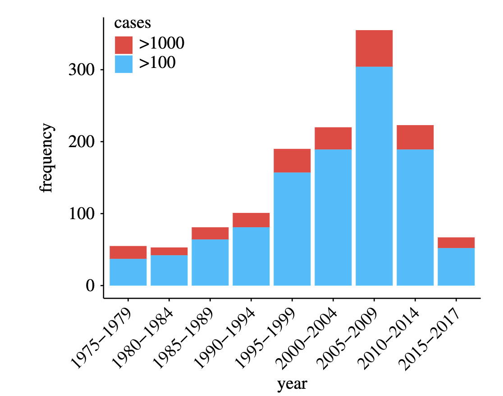
Across the 100 largest zoonotic outbreaks since 1974, large events involved more drivers than background outbreaks — vector abundance, population density, unusual weather, water contamination — in outbreak-specific combinations.
Stephens, P.R. et al. (2021) Phil. Trans. R. Soc. B 376: 20200535.
“Globalization can… be defined as the intensification of worldwide social relations which link distant localities in such a way that local happenings are shaped by events occurring many miles away and vice versa.”
Anthony Giddens (1990) The Consequences of Modernity
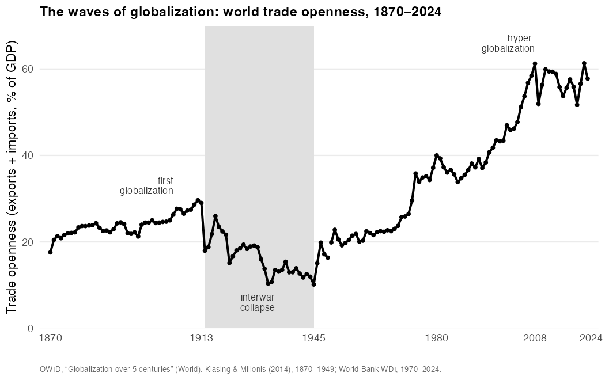
World trade openness, 1870–2024. The interwar collapse — trade falling from a fifth of world output to a tenth — is the empirical refutation of any claim that globalization is inevitable.
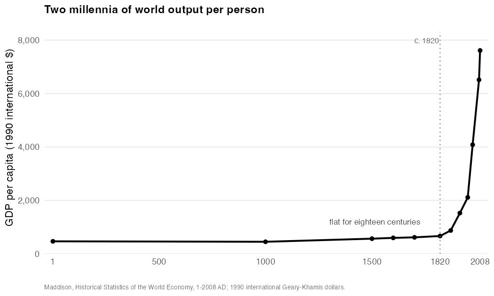
Global GDP per capita over two millennia: essentially flat for all of recorded history, then a near-vertical ascent beginning around 1800.
Daniel Susskind (2024) Growth: A History and a Reckoning
Solow (1956) — growth cannot be explained by labor and capital alone; most of it is a residual: technology
Romer (1990) — the residual explained: ideas are nonrival and cumulative — usable by everyone at once, combinable forever
Mokyr — the recipes needed a culture willing to cook: the spread of a scientific mentality
Ricardo (1817) — England and Portugal, cloth and wine: specialization and exchange leave both parties richer, even when one is better at everything
The evidence — openness helps growth, but by less, and under more conditions, than the boosters claimed
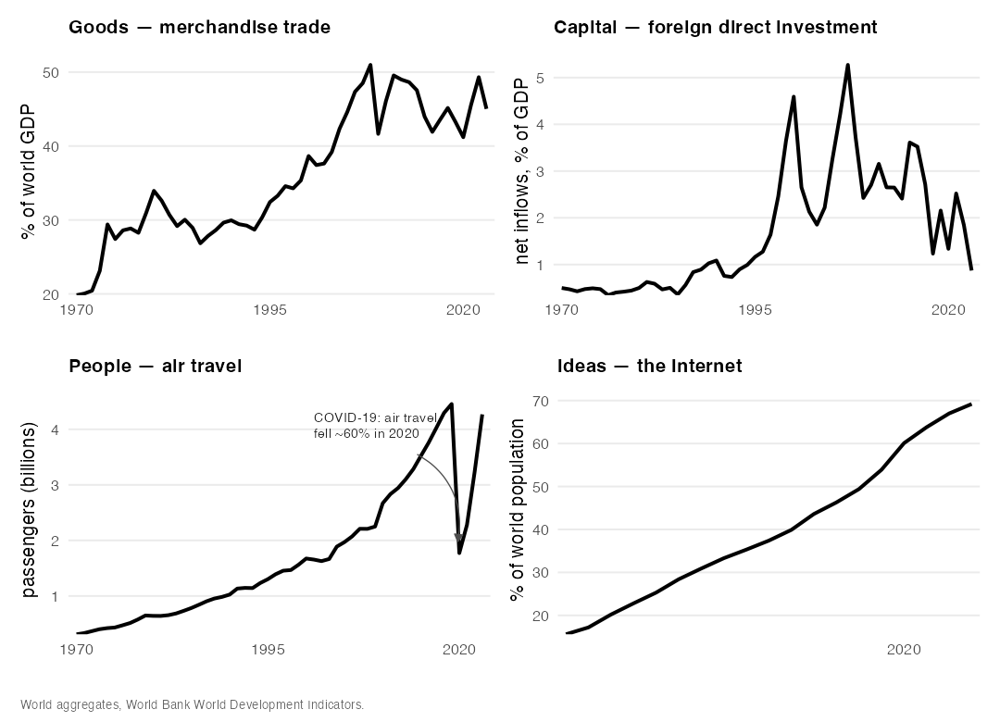
Goods, capital, people, and ideas have all intensified their movement across borders — the measurable substance behind the abstraction of “interconnection.” The one sharp reversal: air travel collapsed by ~60% in 2020, then recovered within three years.
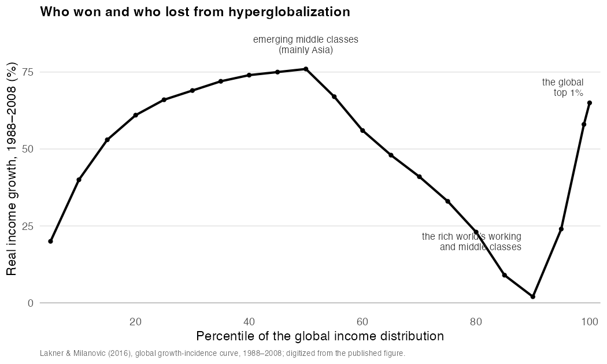
The “elephant curve”: real income growth 1988–2008 by percentile of the global income distribution. Asia’s emerging middle classes and the global top 1% gained most; the rich world’s working classes fell behind in relative terms.
Milanovic (2018); Susskind (2024)
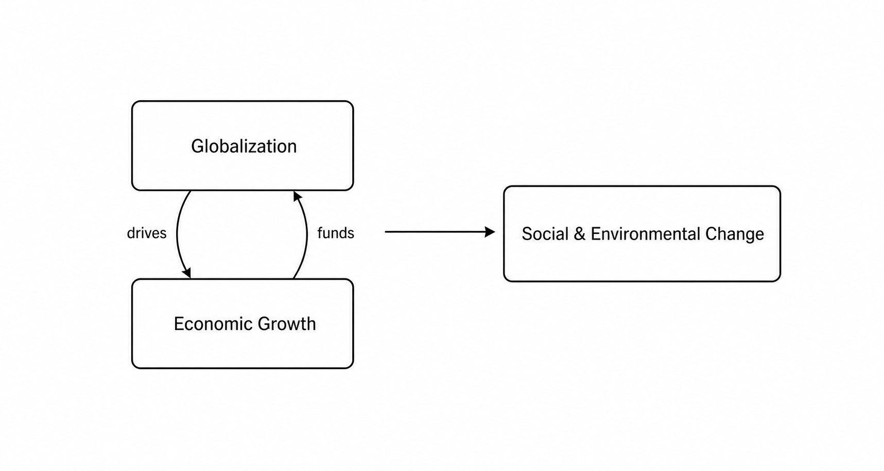
The basic model: globalization and growth drive one another, and their joint output is a wave of social and environmental change.
The means — what moves: goods & services, capital, people, ideas
The domains — what it moves through: economic, political, cultural
Each flow is also a vector — carrying disease along the same channels it opens for everything else
| Economic | Political | Cultural | |
|---|---|---|---|
| Goods & services | Commerce | Regulation | Consumption |
| Capital | Investment | Fiscal power | Philanthropy & impact capital |
| People | Labor | Migration | Travel & tourism |
| Ideas | Innovation | Intellectual property | Knowledge sharing |
Extractive industry = capital × economic: investment opens the frontier — deforestation, mining, roads — and restructures the human–wildlife interface
But spillover is not yet a pandemic — Dobson et al. (2020) price forest conservation at $20–30B/yr; necessary, not sufficient
The pandemics we reviewed ran through other cells — agriculture, mobility, markets, governance
Amazon malaria — 10% more deforestation → ~3% more malaria (MacDonald & Mordecai 2019)
But: outbreak maps partly reflect where health systems can see — reporting falls ~1/3 per hour of travel from care (Gibb et al. 2024)
And: across ~3,000 observations, deforestation per se is a weak, context-dependent driver (Mahon et al. 2024)
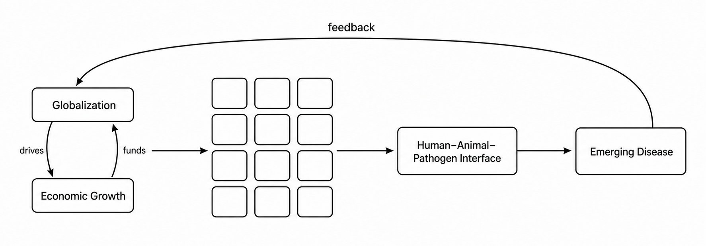
Globalization and growth drive emergence through the twelve moments of the grid — and a pandemic feeds back on the growth and connection that produced it, as 2020 made unforgettable.
Co-location of pig sty and mango trees, Ampang village, Malaysia — the spillover interface built by agricultural investment.
Image: Chua et al. (2002) Malaysian J. Pathology 24: 15–21.
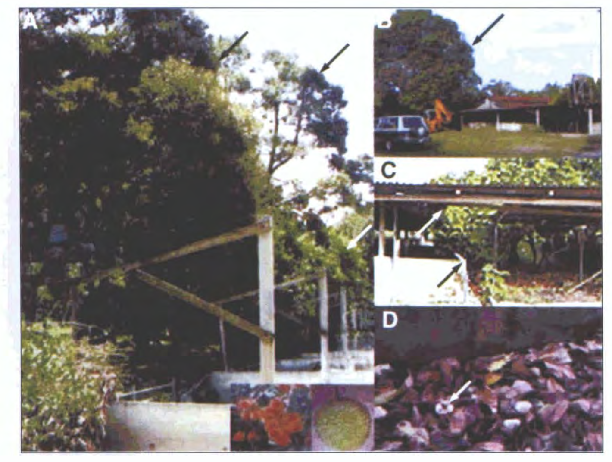
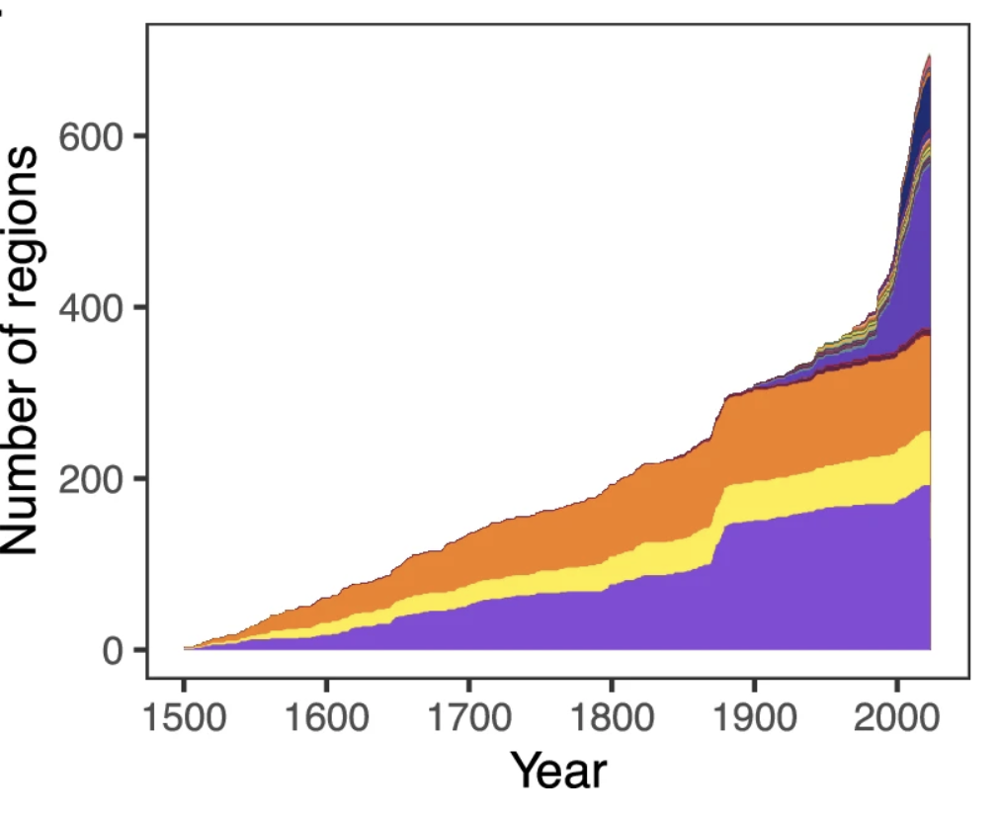
Global introductions of Aedes vectors, 1500–2025: Ae. albopictus — moved by trade in used tires and ornamental plants — is now established on every inhabited continent. Sources: Swan et al. (2022) Parasites & Vectors 15: 303; Pabst et al. (2025) Nature Communications 16: 9127.
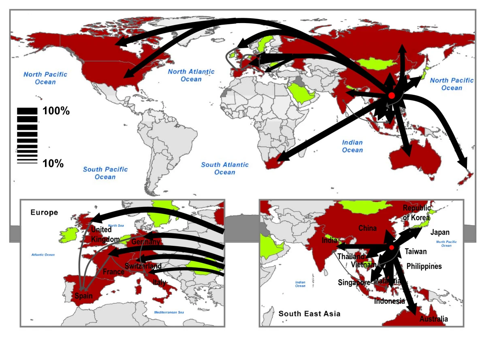
The diffusion of SARS from Hong Kong in 2003 followed the airline network, not geography. Source: Colizza et al. (2007) BMC Medicine 5: 34.
| Economic | Political | Cultural | |
|---|---|---|---|
| Goods & services | Nipah · Chik | SARS | Nipah |
| Capital | Nipah · Chik | ||
| People | Nipah | SARS | Chik · SARS |
| Ideas | SARS |
Coupling — once-separate systems are now tightly linked: bat ecology with industrial livestock; mosquito ecology with shipping; wildlife trade with aviation
Acceleration — connection is old; the speed of connection is unprecedented
Asymmetry — shared exposure, unequal consequences: emergence in the periphery, response capacity in the core
From lists to configurations — the unit of analysis is the pattern of interaction, not the individual driver
Match governance scale to system scale — nested, mutually reinforcing layers: local detection, national regulation, international coordination
Intervene at leverage points — mobility networks, land-use regimes, supply chains, information flows
The world we have built and the world we need
Our world is one in which everything moves: people, capital, ideas — and pathogens.
Pandemics are the wake of that motion.
Savannah Port, Georgia. Image: Wikimedia Commons (CC BY-SA 4.0)
An H1N1 strain almost genetically identical to 1950s viruses re-emerged simultaneously in the USSR and northern China
Genetic uniformity and absence of natural evolution strongly suggest accidental release from a laboratory or vaccine trial
The policy lesson stands apart from the COVID origins debate: as bioscience globalizes, laboratory risk globalizes with it
Dobson et al. (2020, Science): $20–30B/yr in forest conservation and wildlife-trade regulation vs. trillions in pandemic losses
Vora et al. (2022, Nature): embed forest protection in the G20 pandemic fund, WHO pandemic agreement, CBD framework
Caveat: prevention at the source addresses certain classes of spillover — especially bat-associated viruses — not the full pandemic portfolio
Solís Arce et al. (2021, Nature Medicine): across 15 low- and middle-income countries, vaccine acceptance exceeded the U.S. benchmark
Sierra Leone (Meriggi et al. 2024, Nature): reaching a vaccination point cost ~3.5 hours travel each way and 10–12 days’ income
Mobile delivery teams raised uptake dramatically at competitive cost per dose
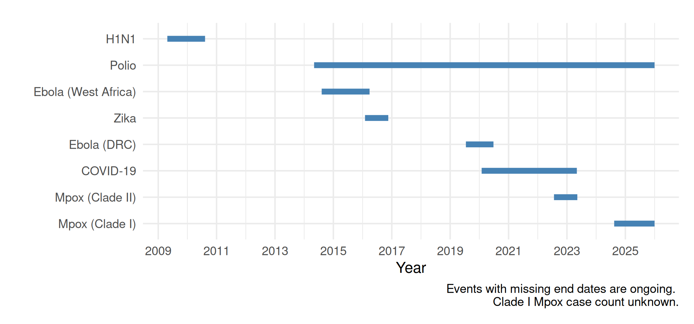
Timeline and duration of the eight Public Health Emergencies of International Concern declared through 2025; a ninth — Ebola in the DRC — was declared in 2026.
© 2026 John M. Drake · CC BY-NC 4.0